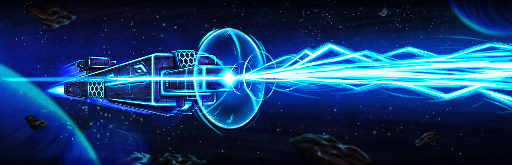
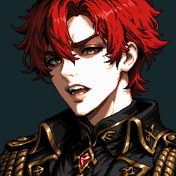
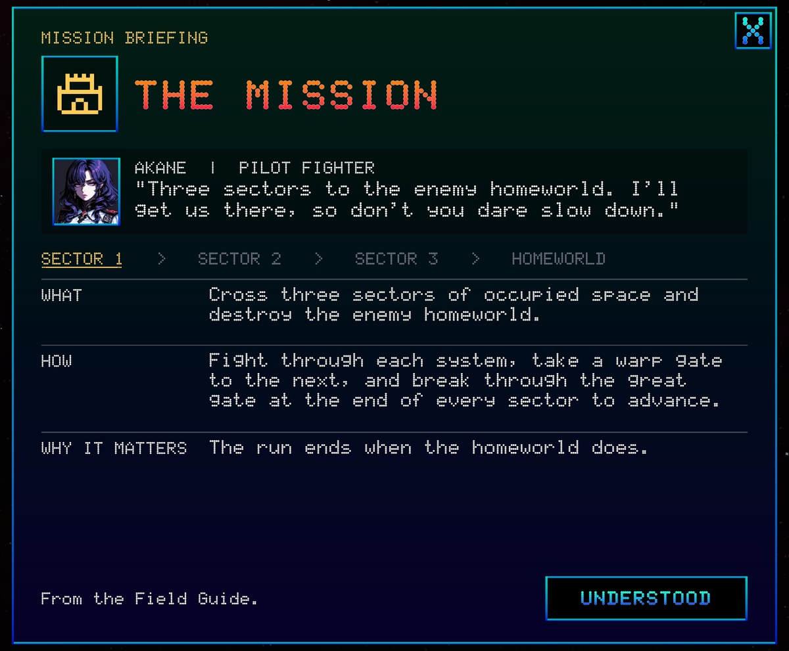

The gun
One enormous gun. Your call when it fires.
Your weapons fire on their own, bullet heaven style. The beam cannon is yours: charge it, line it up through as many hulls as you can, and pick the moment it ends a fight.

One ship. One crew. One mission. Endless enemies.Everyone aboard is the main character. You're the captain.
Take one ship through endless enemies, build a new arsenal every run, and fight alongside a crew of anime protagonists who each star in their own comedy season.
The gun
Your weapons fire on their own, bullet heaven style. The beam cannon is yours: charge it, line it up through as many hulls as you can, and pick the moment it ends a fight.
The story
Between fights, the crew star in their own voiced episodes. You make the call. Some calls are louder than others.
This is Akane Tsurugi, first file on the stack. Turn the sound on.
The crew
Every one of them thinks the show is about them, and every one of them has a season to prove it. Press play to hear them, or open their file.

The best pilot aboard. She trained that hard for the ship, she says, and not for you.

Akane's rival, matched to the decimal. She defected in the middle of their duel, and now they argue about it in stereo.

Two swords, a black coat and a status window only he can see. After every fight he asks if he overdid it.

She leaves a secret upgrade on every ship she serves on. Every part she needs is somewhere the captain would rather not be seen.

Arrives late to every crisis with a rose and a speech, declares his work here done, and leaves.

Keeps score of every round of teasing on a board she bolted to the bridge. She has never lost a round.

Works alone. Commands a secret Shadow Fleet. The glowing eye is a cheap prosthetic on low battery.

So quiet the headcount forgets her. Secretly the most famous VTuber in the fleet, with forty drones on her side.

Believes any problem can be solved by shouting a finishing move loudly enough. His mecha agrees.

Nobody remembers letting her aboard. She raises her own flag on the Nightstar every morning.

The only person aboard who has read every personnel file. She would like that time back.
The crew in a fight
Pilots launch in fighters and mecha, the drone crew runs the swarm, and everyone has a special move. The whole bridge talks through it on the comms feed. Most of it is trash talk.
The bosses
Every boss arrives with an anime cut-in and a title it clearly wrote itself. Every time you knock it down a phase, it adds a few more words.
By the end you are fighting Ultra Dai Albedo of the Apotheosis Abyss Absolute.
The show
The fights bring you back for one more run. The crew brings you back for one more episode.
Every run is a dash across the star chart to the enemy homeworld, with hunter fleets on your tail and gate keepers in the way. Between runs, spend Kizuna on new gear and keep every crew member's season going.

Play
A free demo is coming to itch.io and to Steam Next Fest in February 2027. Wishlist it on Steam to hear when it lands.

Credits
Music used with permission. © 2026 QORUS. © 2026 Disco Dread.
Contact
Press, creators, publishers, or anyone who wants to tell us Reo owes them a rose.
Or email contact@nightstargambit.com.